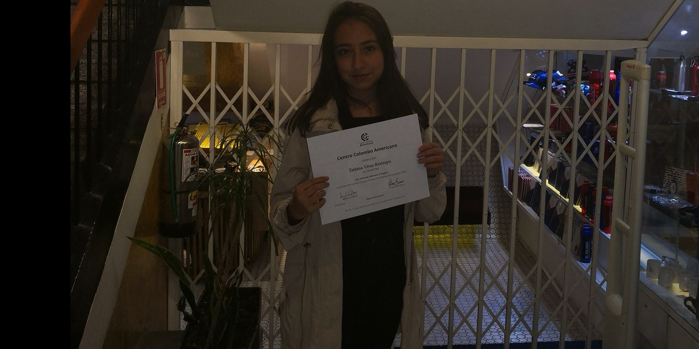
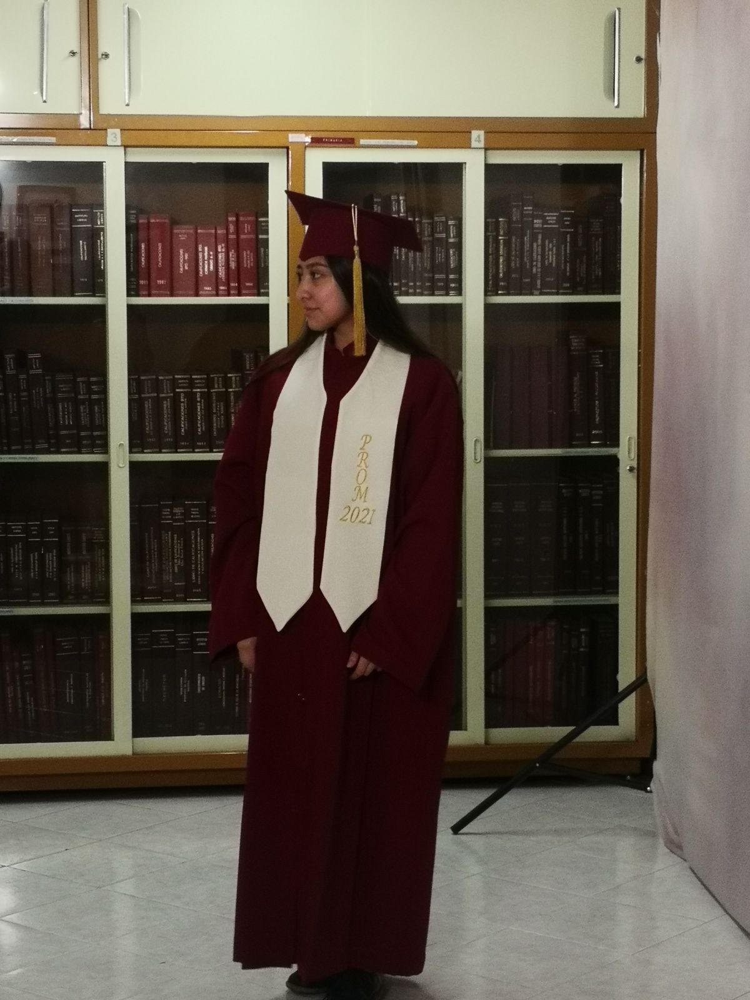
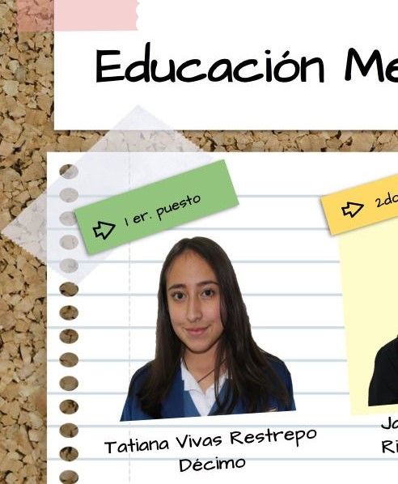
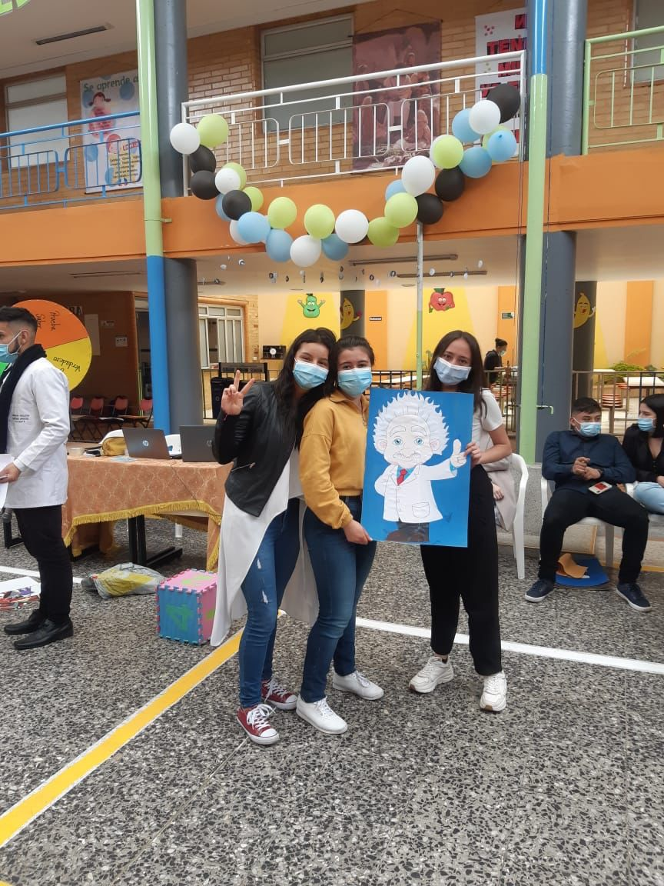

Mi Hoja de Vida
Experiencia Laboral
Monitoría departamento de ingeniería de sistemas
- Institución Pontifica Universidad Javeriana
- Acompañamiento en resolución de problemas
- Elaboración de material de apoyo
- Enseñanza básica en fundamentos para la programación
Estudios
Educación Formal
- Graduada Centro Colombo Americano (2020)
- Bachiller graduada en 2021
- Ingeniería en Sistemas (2022-2026)
- Cienia de Datos (2024-2027)


Premios y Reconocimientos
Logros Destacados
- Premios Al primer puesto en todos mis años
- Reconocimiento por Excelencia Académica
- Premio de Spelling Bee en 2021
- Reconocimiento por olimpiadas matemáticas 2027-2021
- Reconocimiento por día de la ciencia


Producción Intelectual
Trabajos y Proyectos Destacados
- Trabajo grado Colegio - Investigación de la ansiedad en menores de edad (2021)
- Software de Juego de Mecanografía con consola en c (2022)
- Software de Juego de Batalla Naval en Java (2023)
- Sistema distribuido de simulación de Uber (2024)
- Sistemade apoyo de Scrabble en c++ (2024)